十大雅集 / 匠心成物
VIII
匠心成物
传统技艺
收录国家级代表性项目 287 项、629 子项，申报地区涉及 33 个省级行政区，另有中直单位申报的 12 子项、新疆生产建设兵团申报的 1 子项。子项最多的地区：浙江省（54）、北京市（42）、江苏省（38）。
项目档案库
287 项、629 子项
（本页配图如无特别标注，均为 AI 生成的示意图，非实拍。）
第 4 / 5 页（VIII-181 至 VIII-240）
- VIII-181
- VIII-182
黎族船型屋营造技艺
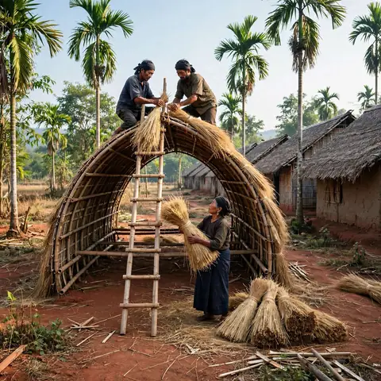
- 海南省东方市2008 第二批 · 新增项目官方页 →
- VIII-183
哈萨克族毡房营造技艺
- 新疆维吾尔自治区塔城地区2008 第二批 · 新增项目官方页 →
- VIII-184
俄罗斯族民居营造技艺
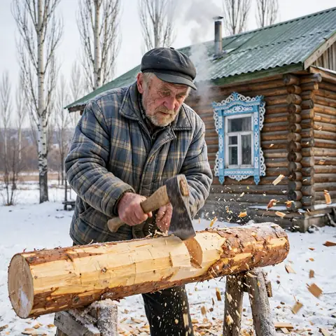
- 新疆维吾尔自治区塔城地区2008 第二批 · 新增项目官方页 →
- VIII-185
撒拉族篱笆楼营造技艺
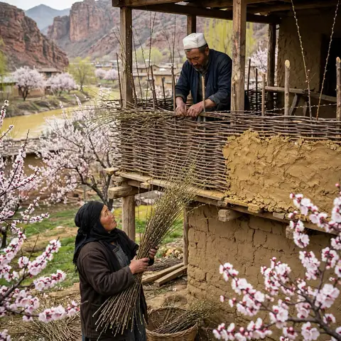
- 青海省循化撒拉族自治县2008 第二批 · 新增项目官方页 →
- VIII-186
- VIII-187
- VIII-188
建窑建盏烧制技艺
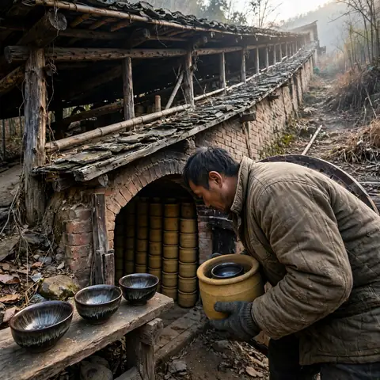
- 福建省南平市2011 第三批 · 新增项目官方页 →
- VIII-189
- VIII-190
淄博陶瓷烧制技艺
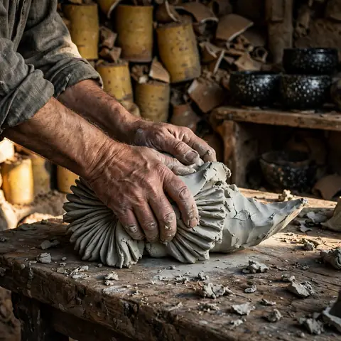
- 山东省淄博市2011 第三批 · 新增项目官方页 →
- VIII-191
长沙窑铜官陶瓷烧制技艺
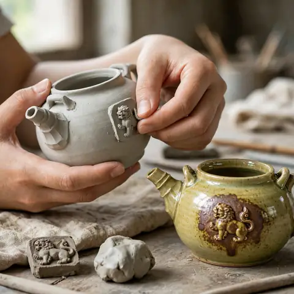
- 湖南省长沙市望城区2011 第三批 · 新增项目官方页 →
- VIII-192
蓝夹缬技艺
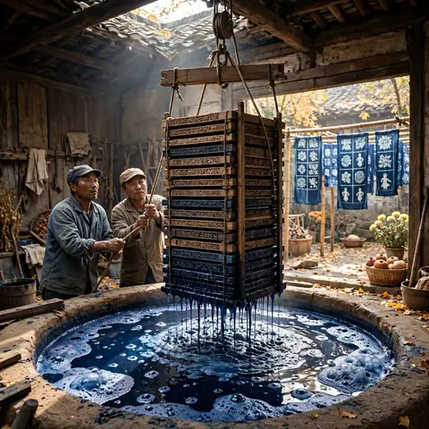
- 浙江省温州市2011 第三批 · 新增项目官方页 →
- VIII-193
中式服装制作技艺
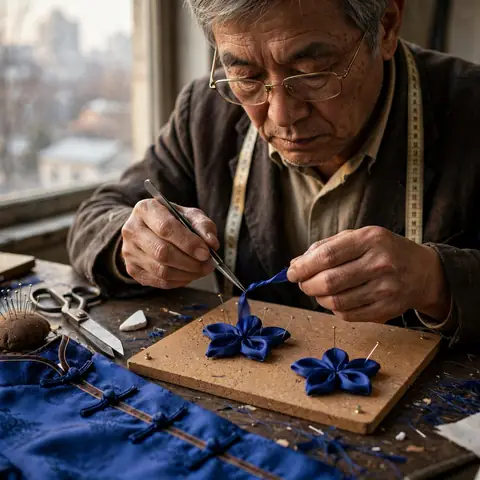
- 中式服装制作技艺（龙凤旗袍手工制作技艺）上海市静安区2011 第三批 · 新增项目官方页 →
- 中式服装制作技艺（亨生奉帮裁缝技艺）上海市静安区2011 第三批 · 新增项目官方页 →
- 中式服装制作技艺（培罗蒙奉帮裁缝技艺）上海市黄浦区2011 第三批 · 新增项目官方页 →
- 中式服装制作技艺（振兴祥中式服装制作技艺）浙江省杭州市2011 第三批 · 新增项目官方页 →
- 中式服装制作技艺（满族旗袍制作技艺）吉林省吉林市2021 第五批 · 扩展项目官方页 →
- 中式服装制作技艺（红帮裁缝技艺）浙江省宁波市奉化区2021 第五批 · 扩展项目官方页 →
- 中式服装制作技艺（香港中式长衫制作技艺）香港特别行政区2021 第五批 · 扩展项目官方页 →
- VIII-194
铅锡刻镂技艺
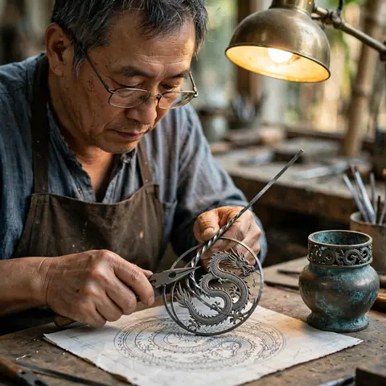
- 湖北省荆州市2011 第三批 · 新增项目官方页 →
- VIII-195
乌铜走银制作技艺
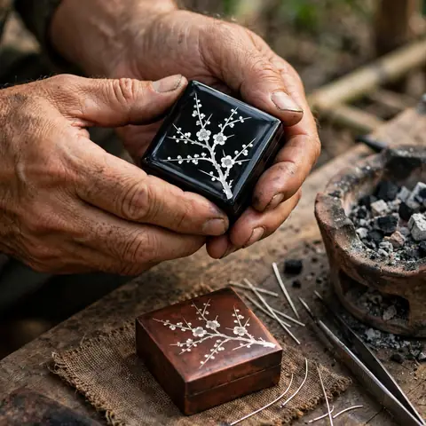
- 云南省石屏县2011 第三批 · 新增项目官方页 →
- VIII-196
- VIII-197
- VIII-198
国画颜料制作技艺
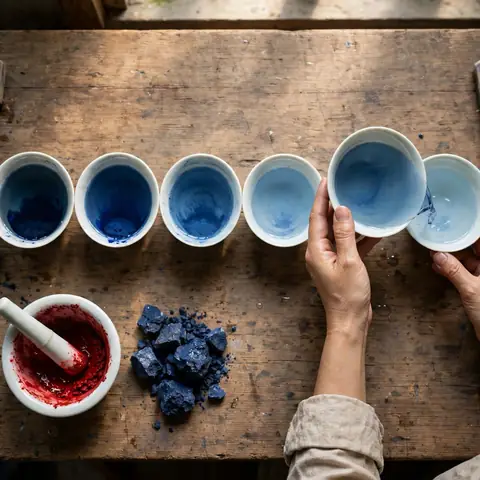
- 国画颜料制作技艺（姜思序堂国画颜料制作技艺）江苏省苏州市2011 第三批 · 新增项目官方页 →
- VIII-199
藏族矿植物颜料制作技艺
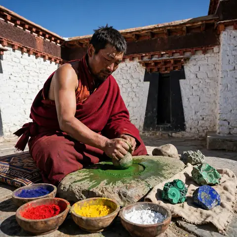
- 西藏自治区拉萨市2011 第三批 · 新增项目官方页 →
- VIII-200
- VIII-201
衡水法帖雕版拓印技艺
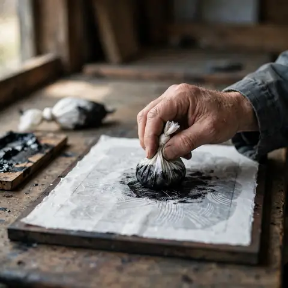
- 河北省衡水市桃城区2011 第三批 · 新增项目官方页 →
- VIII-202
古书画临摹复制技艺
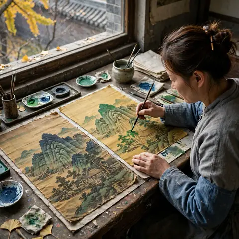
- 故宫博物院2011 第三批 · 新增项目官方页 →
- VIII-203
白茶制作技艺
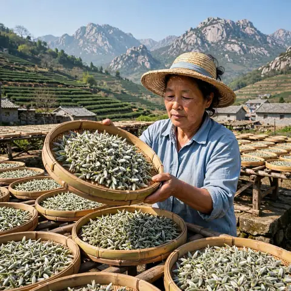
- 白茶制作技艺（福鼎白茶制作技艺）福建省福鼎市2011 第三批 · 新增项目官方页 →
- VIII-204
仿膳（清廷御膳）制作技艺
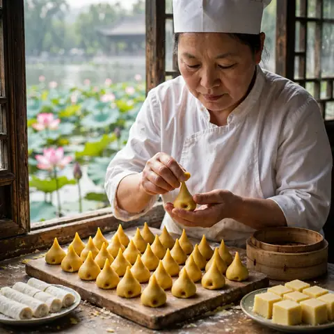
- 北京市西城区2011 第三批 · 新增项目官方页 →
- VIII-205
直隶官府菜烹饪技艺
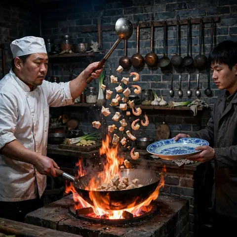
- 河北省保定市2011 第三批 · 新增项目官方页 →
- VIII-206
孔府菜烹饪技艺
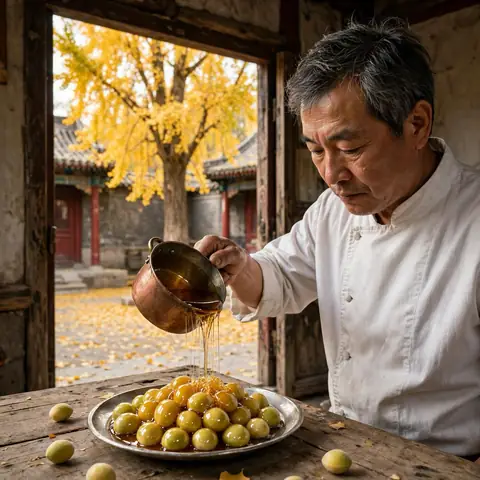
- 山东省曲阜市2011 第三批 · 新增项目官方页 →
- VIII-207
五芳斋粽子制作技艺
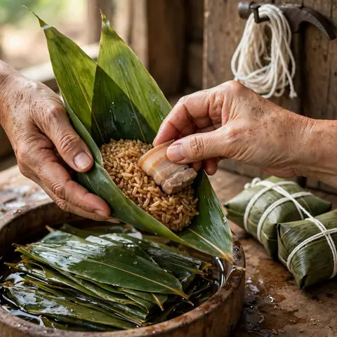
- 浙江省嘉兴市2011 第三批 · 新增项目官方页 →
- VIII-208
北京四合院传统营造技艺
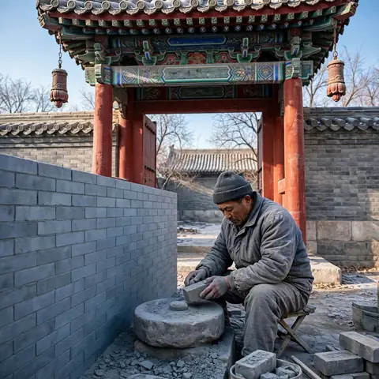
- 中国艺术研究院2011 第三批 · 新增项目官方页 →
- VIII-209
雁门民居营造技艺
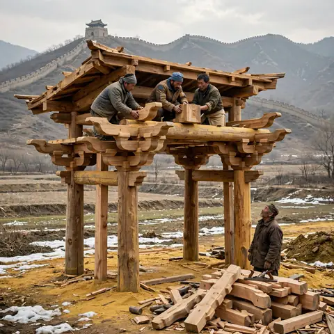
- 山西省忻州市2011 第三批 · 新增项目官方页 →
- VIII-210
石库门里弄建筑营造技艺
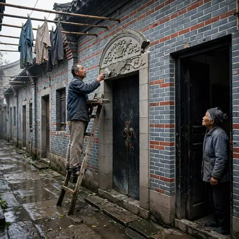
- 上海市黄浦区2011 第三批 · 新增项目官方页 →
- VIII-211
- VIII-212
维吾尔族民居建筑技艺
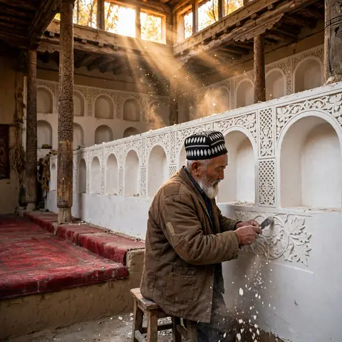
- 维吾尔族民居建筑技艺（阿依旺赛来民居营造技艺）新疆维吾尔自治区和田地区2011 第三批 · 新增项目官方页 →
- VIII-213
邢窑陶瓷烧制技艺
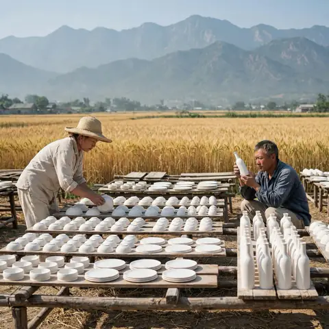
- 河北省邢台市2014 第四批 · 新增项目官方页 →
- VIII-214
- VIII-215
吉州窑陶瓷烧制技艺
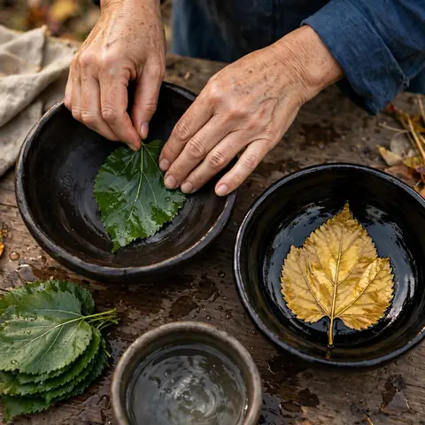
- 江西省吉安市2014 第四批 · 新增项目官方页 →
- VIII-216
登封窑陶瓷烧制技艺
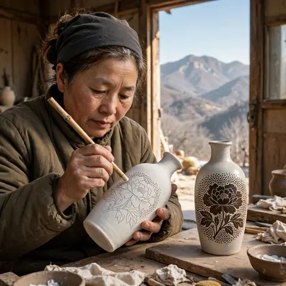
- 河南省登封市2014 第四批 · 新增项目官方页 →
- VIII-217
当阳峪绞胎瓷烧制技艺
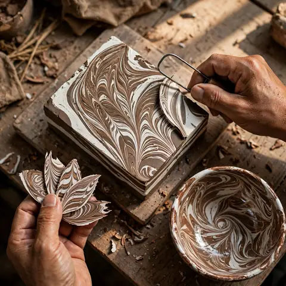
- 河南省焦作市2014 第四批 · 新增项目官方页 →
- VIII-218
潮州彩瓷烧制技艺
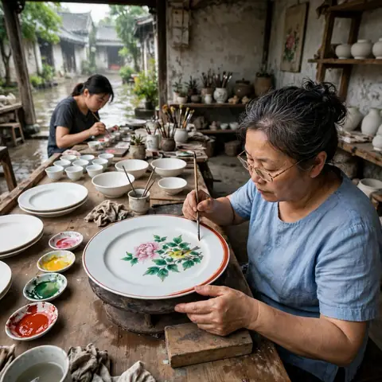
- 广东省潮州市2014 第四批 · 新增项目官方页 →
- VIII-219
陶瓷微书
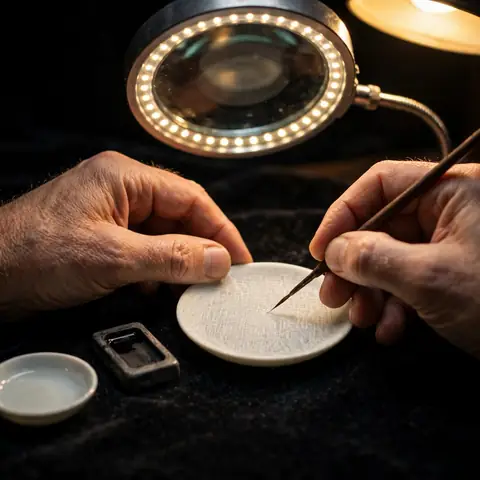
- 广东省汕头市2014 第四批 · 新增项目官方页 →
- VIII-220
- VIII-221
藏族鎏钴技艺
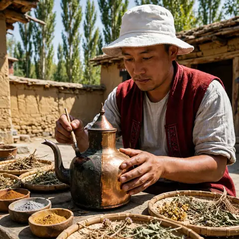
- 青海省2014 第四批 · 新增项目官方页 →
- VIII-222
- VIII-223
古代钟表修复技艺
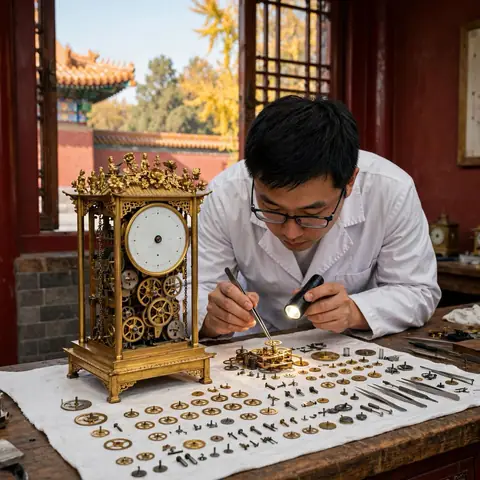
- 故宫博物院2014 第四批 · 新增项目官方页 →
- VIII-224
- VIII-225
一得阁墨汁制作技艺
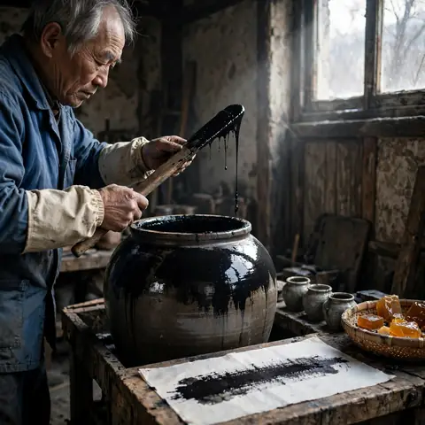
- 北京市西城区2014 第四批 · 新增项目官方页 →
- VIII-226
奶制品制作技艺
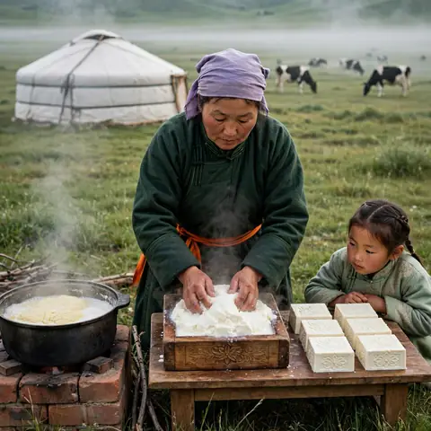
- 奶制品制作技艺（察干伊德）内蒙古自治区正蓝旗2014 第四批 · 新增项目官方页 →
- VIII-227
辽菜传统烹饪技艺
- 辽宁省沈阳市2014 第四批 · 新增项目官方页 →
- VIII-228
泡菜制作技艺
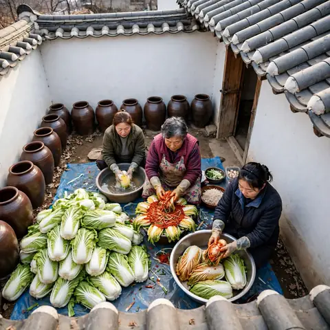
- 泡菜制作技艺（朝鲜族泡菜制作技艺）吉林省延吉市2014 第四批 · 新增项目官方页 →
- VIII-229
老汤精配制
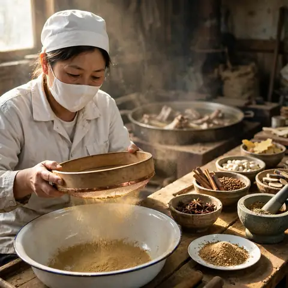
- 黑龙江省哈尔滨市阿城区2014 第四批 · 新增项目官方页 →
- VIII-230
上海本帮菜肴传统烹饪技艺
- 上海市黄浦区2014 第四批 · 新增项目官方页 →
- VIII-231
传统制糖技艺
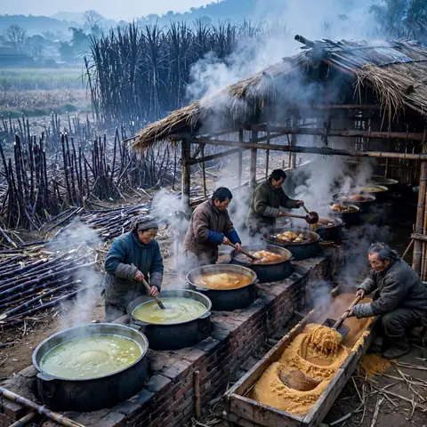
- 传统制糖技艺（义乌红糖制作技艺）浙江省义乌市2014 第四批 · 新增项目官方页 →
- VIII-232
- VIII-233
德州扒鸡制作技艺
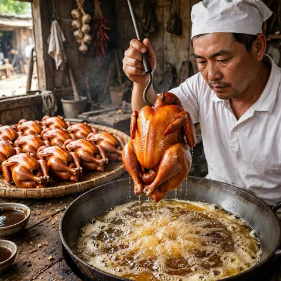
- 山东省德州市2014 第四批 · 新增项目官方页 →
- VIII-234
龙口粉丝传统制作技艺
- 山东省招远市2014 第四批 · 新增项目官方页 →
- VIII-235
蒙自过桥米线制作技艺
- 云南省蒙自市2014 第四批 · 新增项目官方页 →
- VIII-236
坎儿井开凿技艺
- 新疆维吾尔自治区吐鲁番市2014 第四批 · 新增项目官方页 →
- VIII-237
古建筑模型制作技艺
- 山西省太原市2014 第四批 · 新增项目官方页 →
- VIII-238
传统造园技艺
- 传统造园技艺（扬州园林营造技艺）江苏省扬州市2014 第四批 · 新增项目官方页 →
- VIII-239
古戏台营造技艺
- 江西省乐平市2014 第四批 · 新增项目官方页 →
- VIII-240
庐陵传统民居营造技艺
- 江西省泰和县2014 第四批 · 新增项目官方页 →
名录数据来源：中国非物质文化遗产网